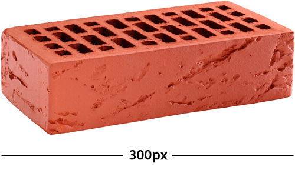
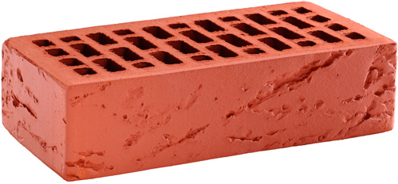
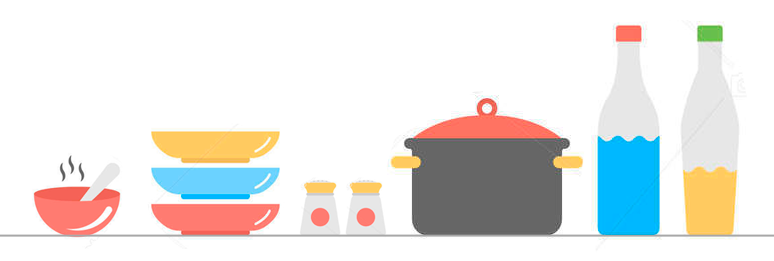
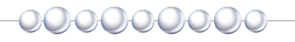
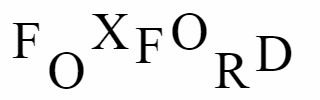

Александр Беспоясов, Ведущий фронтенд-разработчик в www.media-storm.ru
Александр Беспоясов Ведущий фронтенд-разработчик в www.media-storm.ru
Ведущий фронтенд-разработчик в www.media-storm.ru
Браузер устанавливает ширину элементов автоматически, в зависимости от их типа или размера их содержимого.
Для таких элементов как заголовки, параграфы, списки, div, section устанавливается максимально доступная ширина.
Это блочные элементы.
<p>Также ведёт себя и параграф.</p>
div.</div>section.</section>
h1 {
background-color: lightgreen;
}
p {
background-color: yellow;
}
div {
background-color: lightblue;
}
section {
background-color: pink;
}
Для элементов внутри текста, таких, как a, strong, em, span ширина устанавливается в соответствии с размером их содержимого.
У элементов внутри текста, какими бы они ни были, пусть бы даже были такими огромными и многословными, что занимали бы целую строчку, а, может быть, даже и две, а там, глядишь, и целых три, размер будет ровно таким, какой размер у содержимого.
p {
background-color: skyblue;
}
a {
background-color: orange;
}
strong {
background-color: coral;
}
Свойство width устанавливает ширину содержимого внутри элемента.
Можно управлять шириной всех элементов, кроме строчных и строк в таблице.
Значение можно задать:
Простой способ задать конкретный размер: width: 300px;
Может быть только положительным числом.

img {
width: 300px;
}
width: 50%;
Ширина будет вычисляться в зависимости от ширины родительского элемента, если родительского элемента нет, то будет вычисляться от ширины окна браузера.
<p></p>
</section>
p {
width: 50%;
background-color: yellow;
}
section {
background-color: limegreen;
}
width: auto;
Ширина будет устанавливаться в зависимости от типа элемента и содержимого внутри элемента, является значением по умолчанию.
<p></p>
</section>
p {
width: auto;
background-color: yellow;
}
section {
background-color: limegreen;
}
Браузер устанавливает высоту элементов автоматически, всегда в зависимости размера их содержимого.
Высоту тоже можно задать фиксированно, несмотря на объём содержимого внутри элемента. Однако делать это не рекомендуется. Почему? Давайте разбираться.
height: 100px;
Может быть только положительным числом.

img {
width: 300px;
height: 300px;
}
height: 50%;
Высота будет вычисляться от высоты родительского элемента, только если она прямо задана. Если высота родителя не задана, высота ребёнка, заданная в процентах, будет проигнорирована.
height: auto;
Высота будет устанавливаться в зависимости от содержимого внутри элемента, является значением по умолчанию.
div {
background-color: lightblue;
height: 300px;
}
Если задать фиксированное значение для высоты, то высота элемента будет постоянной, а вот содержимое элемента будет вынуждено отображаться поверх него.
Нельзя угадать, сколько текста будет на странице. Поэтому в вёрстке высоту почти никогда не ограничивают.
Существуют внешние отступы (между элементами) и внутренние отступы (поля).
Внешние отступы задаются свойством margin.
Поля — свойством padding.
Внешние отступы — это отступы от внешней границы элемента до границ родительского элемента или до соседних элементов.
Для применения внешнего отступа используется свойство margin с указанием от какой границ отступать – margin-top, margin-right, margin-bottom, margin-left.
Для того, чтобы указывать все отступы сразу, мы можем написать одно свойство margin и объединить в нём все отступы. Свойство может принимать 1, 2, 3 и 4 значения.
Margin: 10px; свойство с одним значением применит ко всем границам одинаковый отступ.
Margin: 10px 20px; применит отступ в 10px для верхнего и нижнего края, а отступ в 20px для правого и левого края.
Margin: 10px 20px 30px; применит отступ в 10px для верхнего края, отступ в 20px для правого и левого края, отступ в 30px от нижнего края.
Margin: 10px 20px 30px 40px; Применит отступ в 10px для верхнего края, отступ в 20px для правого, отступ в 30px от нижнего края и отступ в 40px для левого края.
Поля (внутренние отступы) — это расстояние от границ элемента до границ его содержимого.
Для применения полей используется свойство padding с указанием от какой границ отступать – padding-top, padding-right, padding-bottom, padding-left.
Для того, чтобы указывать все отступы сразу, в свойстве padding тоже можно объединять отступы, указывая 1, 2, 3 и 4 значения.
padding: 20px; свойство с одним значением применит добавит одинаковые поля со всех сторон.
padding: 100px 30px; применит большое поле 100px для верхнего и нижнего края, а поле в 30px для правого и левого края.
padding: 100px 20px 50px; применит поле в 100px для верхнего края, поле в 20px для правого и левого края, поле в 50px от нижнего края.
padding: 100px 50px 25px 5px; Применит поле в 100px для верхнего края, поле в 50px для правого, поле в 25px от нижнего края и поле в 5px для левого края.
Мы подразумеваем, что у всех элементов есть рамка. Часто мы просто держим её в воображении, но ничто не мешает сделать рамку видимой.
Визуально оформить рамку можно при помощи свойства border.
Указать необходимо три значения:
border: [толщина] [тип линии] [цвет];
border: 1px solid red; – создаст линию толщиной в 1 пиксель, линия будет сплошная (solid) и красного (red) цвета.
Толщина линии
Может быть задана в пикселях и никогда в процентах.
Цвет линии
Может быть указан в любом из цветовых форматов: grey, #48bc36, hsl(112, 55%, 47%). Может быть и прозрачной: transparent.
Стиль линии
| 1 пиксель | 4 пикселя | 8 пикселей |
|---|---|---|
dotted |
dotted |
dotted |
dashed |
dashed |
dashed |
solid |
solid |
solid |
double |
double |
double |
groove |
groove |
groove |
ridge |
ridge |
ridge |
inset |
inset |
inset |
outset |
outset |
outset |
Если добавить на страницу несколько фотографий разного размера, они выровняются по нижнему краю так, словно выставлены на стол:
Это не всегда тот эффект, которого нужно добиться. Часто нужно выровнять что-то по центру, как бусины на нитке:
Свойство vertical-align выравнивает элемент по вертикали относительно родителя или окружающих его элементов.
Данное свойство можно применять к изображениям, к строчным элементам и ячейкам таблиц.
Свойство vertical-align может принимать следующие значения:
baseline - выравнивает базовую линию блока по базовой линии родителя. Если у блока нет базовой линии, то за неё принимается нижняя граница;bottom - выравнивает низ блока по нижней части строки;middle - Выравнивает вертикальную среднюю точку блока по базовой линии родительского и добавляет половину высоты;sub - Опускает базовую линию блока вниз для создания нижнего индекса. НЕ изменяет размер текста;super - Поднимает базовую линию блока вверх для создания верхнего индекса. НЕ изменяет размер текста;top - Выравнивает верх блока по верхней части строки.Также можно указывать значения в пикселях и процентах, положительное значение сместит выше базовой линии, а отрицательное ниже.
FOXFORD > 
Чтобы обратиться к каждой букве по-отдельности, мы заключим её в тег span:
<span>F</span><span>O</span><span>X</span><span>F</span><span>O</span><span>R</span><span>D</span>
И к каждому span будем обращаться по порядковому номеру, используя псевдокласс :nth-child(n), где n это и есть номер элемента:
span:nth-child(1){
vertical-align:baseline;
}
span:nth-child(2){
vertical-align:-20px;
}
span:nth-child(3){
vertical-align:super;
}
span:nth-child(4){
vertical-align:sub;
}
span:nth-child(5){
vertical-align:top;
}
span:nth-child(6){
vertical-align:bottom;
}
span:nth-child(7){
vertical-align:middle;
}
Мы умеем: